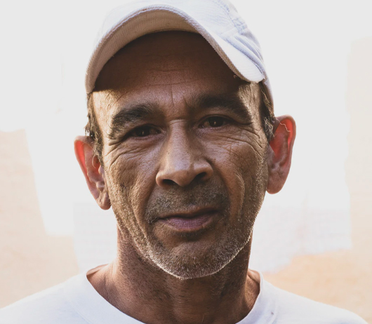
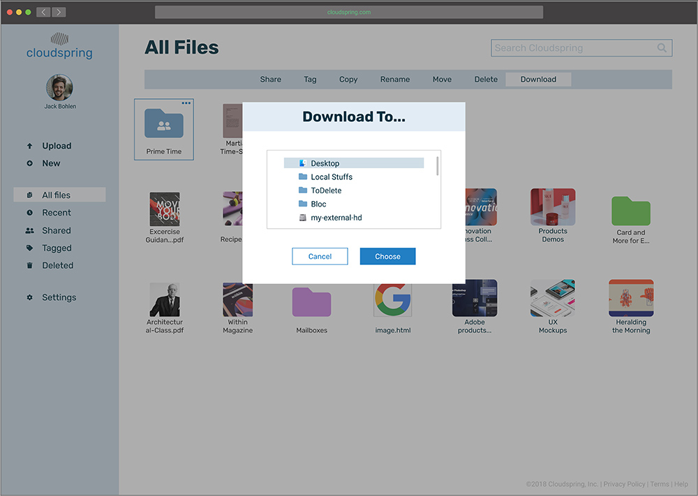
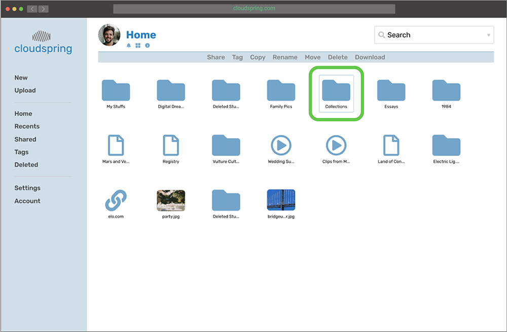

Stacks
Product design for a news aggregator app for iOS and WatchOS..
View Prototype
Project Summary
Summary
The Challenge
There’s an overload of information when people try to keep up-to-date with the news. Sometimes it can be challenging to follow a particular topic from breaking news until the story completely develops. In the middle of an important news cycle, another news story can break out, thus distracting and overwhelming the user day after day.
The Solution
This app solves this problem presented above by letting users create a collection of topics using any word or phrase. These would be easily accessible on a dedicated feed and the user will be able to read all the stories based on the topic of interest, following any particular story life cycle from beginning to end, or just to have a bigger perspective of what was published about any event.
The Process
Discovery
- Project brief
- Technical specifications
Analysis
- Research
- Competitive analysis
- Personas
Visual Design
- Mindmaps
- Moodboards
- Style guide
- Hi-fi mockups
- Preference test
Project
Discovery
Project Brief
The news app market is an exciting one. People always need to be kept up-to-date. Even with recognizable news outlets in the market for many years, there’s still space for an even more personalized news aggregator app that can combine different features for ease of use and consume from the user’s point of view. This news app could be set apart by offering:
- Function to listen to the news using vocie control.
- Ability to add news topics to a dedicated news feed.
- Ample ofering of magazine titles.
- Condense any news story in 2 short paragraphs.
- Offering a watch companion.
- Feature to read a contrasting story for a balance view.
Roles
- Researcher
- Content Producer
- Usability Tester
- Visual Designer
Deliverables
- Competitive Analysis
- User Personas
- User Stories
- User Flows
- Wireframes
- Branding
- User Testing
- Prototypes
Strategy
User Research
To get to know the user, I used a survey as a method to do the primary user research. My main focus was to know the user’s priorities when using a storage service, as well as features they like or dislike, and how this web app could help them in their everyday life. These were some of the findings:
75% Would like to be presented information based on chosen topics
78.1% Read the news on a daily basis.
42.9% Don’t read the news because lack of time
64% Regularly read the complete story
20% Ususally read the first 2 paragraphs of a story
44% Would consider a feature that reads the news for them.
Takeaways
I completely had to focus on the direction of the app. I learned how important is to listen to users and use data to make better decisions and come up with better solutions. I also learned to be flexible, and adapt when the circumstances call for it.
Strategy
Competitive Analysis
I downloaded many news apps and started exploring them to understanding what they do best or what could be improved. I was also investigating if any of those apps had the features that were planned for the app I was working on. However, since analyzing all of them was unrealistic because of time constraint, I chose the top 3 apps based on the answer people gave on the following question from the survey: “What news app or website you get your news from?”
Appeals to users that want to get real-time news. They serve young and mature clients. However, the app does not have easy to find call-to-action buttons and suffers from confusing navigation. As a strength, they enjoy brand recognition and unified branding across all mediums. The app has all the features users might expect, including a bookmark function.
Distributes news to the end-user from other news sources. The strength of the service is easy access to the context of a story and multiple perspectives. The user can set up email alerts on various topics. There’s also a voice feature where the user can open up news sources by using Siri, although this feature is not easily noticeable.
This app comes built-in in Apple devices, so it is easy to start using it if you have an Apple product. It features animated covers in some magazines to enrich the reading experience. Different users can use it within one plan (Family sharing). It has an editor-curated coverage of current events. However, some functions are not so easily accessible like the bookmark feature.
Takeaways
By analyzing the competition, I could acquire the necessary knowledge of what regular users experience when using other applications, as well as what was missing or what could be enhanced for the client’s app.
Strategy
User Personas
To construct the profile of the user, I conducted phone and face-to-face interviews with a few people. Before meeting with them, I created a questionnaire so I can be prepared when meeting them. After that I created 3 fictional use cases based on the interviews:
“I would like a news app that can serve only the information of a certain topic that I want to read”.
Vanessa Polcyn
43 years old
Controller
Story
Vanessa is a professional hard worker that works as a comptroller for a restaurant chain. She lives a very organized life, always planning ahead of time. Vanessa commutes everyday to work on the train where she reads the news, books or magazines. She usually checks the news twice a day: In the morning and in the afternoon at the end of the workday. Outside of work, she is very active and likes to go biking and playing golf.
Goals
- Wants to keep tabs on information that she can relate to.
- Keep digging until learning the complete picture of any news.
- Learn from different viewpoints.
- Widen my knowledge in other non-news related topics.
Frustrations
- Unrequested apps asking for my email when reading stories.
- Can’t choose topics to follow.
- Don’t like apps pushing for subscriptions.

“I would like an app that can always keep me in-the-know, and also give me a deep wealth of information”
Greg Roy
62 years old
Retired
Story
Greg is a retired man living by himself in New York City. He worked for a bank all his life and developed a deep love for reading, and now that he is retired, he has time to sit and read long interesting articles to stimulate his mind. He also enjoys visiting his friends and family. He enjoys using the internet and other gadgets, but his use is limited since he uses them to shop and read news most of the time.
Goals
- Wants to read the news to comprehend the whole picture of an issue.
- Wants to know the latest news.
- Reads news from other countries.
Frustrations
- All the news articles basically come from the same source, too repetitive.
- Not easy to explore other points of view.
Takeaways
By creating personas, I could think of them as real users, and throughout the project, and with every decision, I kept asking this question to myself: ‘Would Mark like this feature?”, “Is this flow easy to Paula?”, “How would Renée accomplish this task?” Keeping these personas in mind helped me always think about the end user in preparation for the testing phase.

Information
Architecture
User Stories
To create stories, I referred to the goals and frustrations of the personas, and I also took a look at how some competitor’s app lets the user complete certain tasks. All these techniques helped me create stories for a visiting user, new user and returning user. In the beginning, the stories that I came up with were somewhat vague. After consulting with my mentor, who also acted as a product manager, I made the user stories more specific so that anyone looking at them could easily know what the action or task is.
| Role |
Tasks |
Importance |
| As a new user |
I want to read my topics as bite-size information |
High |
| As a new user |
I want to be read out loud my bite-size topics headlines |
High |
| As a new user |
I want to read a news article from my topics, trending news or bookmarks |
High |
| As a new user |
I want to bookmark an article that I'm currently reading |
High |
| As a new user |
I want to read related news based on a recently read article |
High |
| All users |
I want to contrast two news articles |
High |
| All users |
I want to open the app on my weareable device |
High |
| All users |
I want to access my bookmarks |
High |
Information
Architecture
User Flows
I created user flows for both the mobile app and the watch app. Once again, I looked at competitor’s apps to get ideas I could implement or looking out for problems I could address. For me, this was a good step to empathize with the people, since the fewer steps or frictions I add to the task, the more enjoyable their experience would be. I also learned to be specific and not assume that a step was so well-known to someone looking at the flow, that I should omit them.

Fig. User flows done on hand.

Takeaways
I was at the beginning of the project a bit glued to follow the user stories and flows just as I designed them. Only after the usability tests and seems real user interacting with the prototype, let me understand that these are initial guides, and even, though some flows changed I knew this change was dictated by the user and not by my own bias. Incorporating and being flexible in changing them helped me to deliver a more cohesive design.
Information
Architecture
Wireframes and Testing
Finalized the user flows, it was time to start putting the research into a design. I first sketched the different screens on paper and drew them on the computer. After all the screens were done, I performed the first usability test to see how this attempt performed.

Fig. Wireframes done on hand.

Fig. Wireframe of the process to upload an image
Fig. Wireframe of the sign up page
Mockup Usability Testing
Right after this, I created mockups to fully test all the tasks. Before putting it out to test, I did notice that my design looked too much like Apple’s design language. This was because I tried to design with Apple’s specifications. But I felt uneasy with the result. So I went back to the drawing board and I tried again to give it a more original style. I also looked at other related apps. When I was satisfied with the design, I brought it to InVision and then to Maze to test remotely. Some of the findings were:
Creating a new stack
Before:

Upon account creation, the user would land at blank state page encouraging them to create a new stack, A but during testing, I found that the screen was unnecessary since the same thing could be better accomplished by encouraging the user to select from predefined categories instead.
After:

I added a short copy B1 letting the user know that they are not following any stack at this moment, but also the screen now presents 3 different ways to create a stack: By searching, by trending topic or by category. B2.
Icons as indicators
Before:

I noticed that users where lingering on the create a stack page, this made me understand that they were not sure what was clickable. A
After:

To assist them and decrease the cognitive load, I added plus signs icons next to the images in order to alert the user that they could interact with it. B
Bite-Size (Later Changed to “Quick Read”)
Before:

While interacting with the bite-sized story feature (Later changed to “Quick Read”) I started noticing some confusion on the news feed screen. I saw too many unnecessary clicks on the top buttons, and I thought that was because the app was offering too many options and the user was getting either distracted or getting information overload. I kept this on my mind for the next iteration and see how I could resolve this issue. A
After:

The solution was to clean up the top portion of the bite-sized story (Later changed to “Quick Read”) screen, but I did not fully know how to organize all the components up until I started doing some preference test on that screen, when a user pointed another feature out, while I was taking care of that one, it all fell into place and I organized this screen better.B
Takeaways
The feedback gathered after the usability test was invaluable. It allowed me to evaluate some of my ideas and see if they work. In some cases they did, in others, they were not good at all, and I even discovered some mistakes. This feedback made me push the design forward.
Information
Architecture
High Fidelity Prototype
To implement the findings of the usability test, and to apply the branding, I created a high fidelity prototype of the app that I could further test with users.
One of the challenges I had to overcome during the low-fi prototype was the way I designed the prototype was a bit confusing to the user because there were so many screens if the user made an unexpected decision, the next screen could be something that they were not expecting. I overcame this issue by re-assembling the prototype and made the flow simpler and linear.

Fig. Dashboard showing "All Files"

Fig. "Download To" modal

Fig. "Tag a Folder" action
Usability Testing: Round 2
I created high-fidelity mockups for the website that would serve to announce the app, the app itself, and the watch companion. One of the challenges I had was how far I can rethink the interface when applying color, typography and trying new layouts, that won’t deviate too much from the low-fidelity wireframe that I tested before. I did apply the changes based on the previous testing, but, overall, tried to keep the same design feel and layout design. I tested the mockup with 3 user: 2 via video conference and 1 on a 1:1 interview. Some of the changes after testing were:
Homepage
Before

On the 3 occasions that the app was tested, I noticed that it was a bit difficult for the users to deduct what this app was about by just looking or scanning the homepage. This presented a big problem since this would be one of the mediums for the public to get to know the app and understand what it does. A I had 2 “Download Now” action buttons nearby: One above the fold and the other below the fold. During testing, the users were getting confused as to which button would let them download the app or take them to the app store.A.
After

I refined the copy on the homepage, gave it more space to breathe to make it more scannable, and also added a paragraph explaining what this app was about right below the fold. B. I separated both buttons: Kept one above the fold and moved the other one before the footer so it can function as the last action that the user would take after scanning the page. B
Listening to the stacks
Before

This feature, even though it demonstrated that it was interesting to the people testing the app when was discovered while browsing the homepage, could not be well tested because of software issues. The testers tried to speak and give a command, but on three occasions it was tested, the software could not understand. They were trying to say “Emmys” and I suspect the problem came up because it was a word a bit tricky to pronounce and for the software to understand. A.
After

I changed the news stack to “Watchmen” and will run a test of just this particular iteration to see the results. B.
"Quick Read" feature
Before

This feature was intended to function as a way for the user to quickly get the main points of any news (condensed in 2 brief paragraphs). The way it was presented to the user testing it was that upon clicking one button, it would expand all the news in the feed at the same time and let the user browse. During testing, users pointed out that they would prefer it to open each story individually. A.
After

I changed the behavior of the quick read feature. Instead of opening the whole feed to reveal 2 paragraphs per story, behavior that caused information overload and the user to browse a long page, now each story has a button where the user can choose to click and reveal each news as they like. They can also close it from here. A by-product of this solution was that it permitted the area of the top screen to look spacier since the 2-tabs system that existed before (“FEED” and “QUICK READ”) was no longer necessary.B.
Article Screen
Before

When the users were reading a particular article, on more than 1 occasion I got comments like “I like the feature where I can see how long a story would take to read”, however, at that moment that feature was not present: People were mistakenly thinking that the publishing date was the time it would take to read the story. A
After

I added “Published” right before the date to clarify that it was the published date. B

Branding
Branding
To start infusing personality to the brand, I started brainstorming some names that can create a connection to the main users. I also used mindmapping to help me funnel the different ideas that were coming to my mind. I settle on the idea of a spring coil and a cloud. Spring coil evoking the storage of energy and the fast or controlled release of it, and the cloud to use it as an anchor of the idea that the files can be accessed easily anywhere. To get to the logo, I studied the shape of a spring coil and a cloud. I did not want the logo to be too literal, but a nod to the components, since the name “Cloudsping”, has the meaning on it.
Brand Name
To find a good brand name for the app I used mind mapping and came out with a good amount of potential names. Then I narrowed it down to 3. I did some preference testing to see which one of the 3 resonated more with the participants.

Icon
For the icon, I explored different shapes. I had my personal preference but kept iterating until I finally decided to use a stackable shape that would go along with the name “Stacks”. The icon went into further iterations, and more preference test, until it was refined.
One of the ideas I was exploring involved the use of negative space to bring out the “S”, but time after time the users during preference testing, could not see it, so I abandoned this idea and ultimately, came up with one where the meaning was more clear and elegant.

Moodboard
The moodboard helped me unified the brand and get even more creative ideas for the overall look of the app.
Colors
For the colors, I tried to use a combination of calm colors to make the user comfortable while reading and interacting with the app and keeping the experience enjoyable.
Typography
The typography is a combination of serif and sans serif font to create contrast. The title of the news topics are set in serif, and the story itself is sans serif to help the user feel more comfortable when reading an article.

Illustrations and Icons
TI created the icons and illustrations to support the branding and to pair it with the design. I wanted them to serve as visual aids when the reader might prefer to visually interact with the app, and in the case of the illustrations, to bring familiarity and make the experience interesting.

Branding
Preference Test
I performed various preference testing to evaluate which design was better for a particular screen.
The feedback I got from the preference test was invaluable since besides deciding on the options, I could discover other issues: Users not understanding certain components of the design unrelated to the preference that they were performing. That allowed me to empathize with them once again and make the necessary changes.
For example, one of the struggles I had as the interface designer was how to clean the top portion of the news feed screen, and thanks to the input of some users, I devised a better way to display those buttons.
News Topics Screen

60% Preferred 2 squares per row.

40% Preferred 1 horizontal rectangle.
News Feed Screen

93% Preferred news title with horizontal line as separator.

7% Preferred news presented as "cards".
Article Screen

60% Preferred to always see the status bar.

40% Preferred the main image to hide the status bar.

Product
Highlights
Product Highlights
This app feature:
- Follow any particular news topic in one or many dedicated news feed.
- Bookmark any article.
- Personalized recommendations.
- Read different point of views.
- Voice control feature.
- Read a short 2 paragraphs of any news.
- Easy channel personalization.
- Accessible via mobile app and watch.
Stacks creations
The design of the homepage is clean and tries to guide the user to sign up for one of the options after giving a tour of all the benefits of the service.
Contrasting points of view
Since one of the requisites of the project was to have a document creation option, this was provided with the most easy-to-do interface. Focusing also on sharing and collaboration, which according to the client’s guidelines and the research performed, were very important.
Voice control
The application is not only expected to be a place where users create but also facilitate when users upload data. This we provide by an easy-to-follow interaction.
Bookmarking
The opportunity to collaborate on any kind of file is supplied by an easy user experience: Just check a box, provide the medium to alert the guest, set some security measure, and the process is done.
Watch companion
Is expected that the user of this app comes many times to share, store and collaborate. To rein-in all the expected data, the easy tagging system would make finding any file a very pleasant experience.
Quick Read
Sharing is not only expected by the user but also encouraged by the app. Every time the user wants to perform an action, she can fill confident that will have the opportunity to share that file with others.
What I learned
This project was exciting and challenging at the same time. When I started it, I thought that I would be able to do it quickly, but I soon realized I needed to invest a considerable amount of time testing, solving challenges, and getting feedback as much as possible. It also cemented some UX concepts in my mind and made me be better prepared for the next UX projects ahead.
It was exciting to work on the voice feature. This is one branch of UX that I would like to explore more in the future. If given more time, I would have like to perform more testing on the watch version.